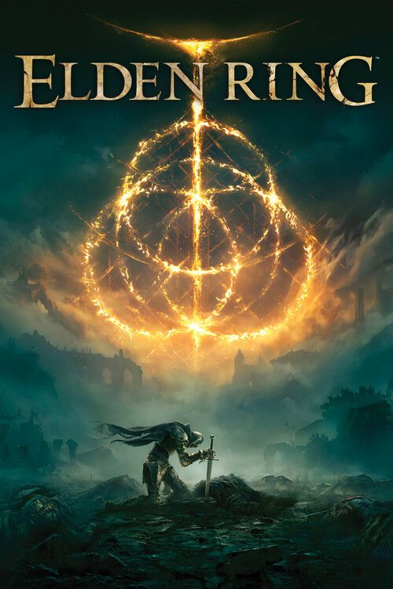
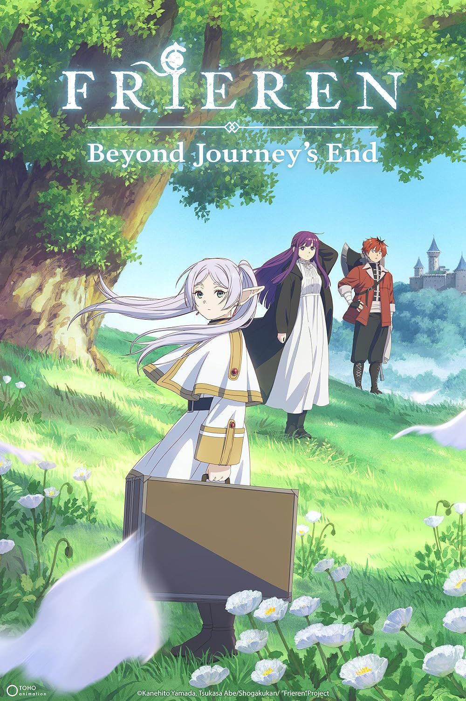
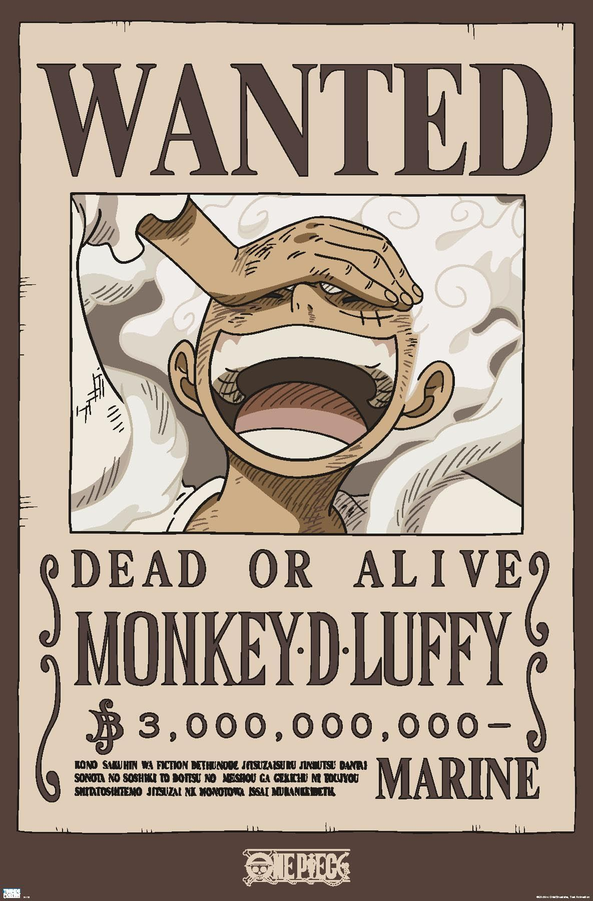
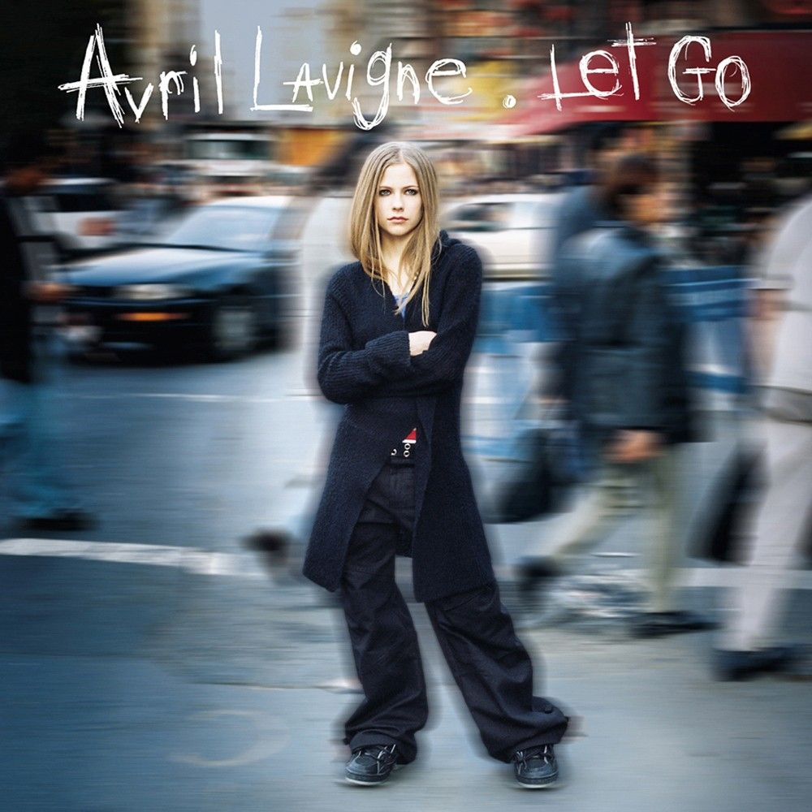
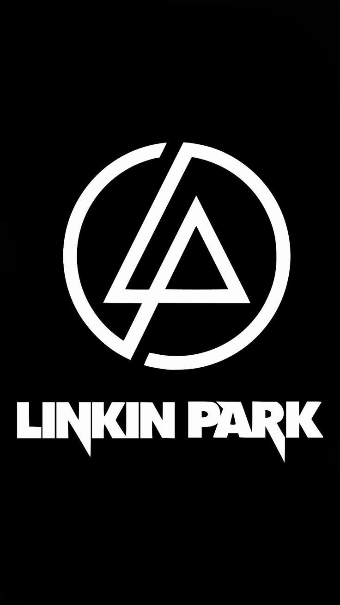
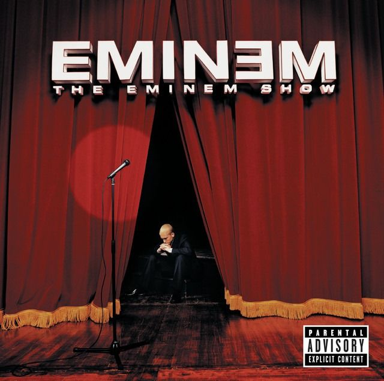

Hobbies & Interests







If you don't take risk, you can't create a future - Monkey D. Luffy
I'm currently studying Bachelor of Science in Computer Science as a 3rd year student. I enjoy exploring different technologies and continuously improving my programming skills. I'm focused on building a strong foundation that will help me succeed in the tech industry.






My goal is to become a skilled and successful programmer, particularly in software engineering or cybersecurity. I aim to build meaningful projects and continuously improve my abilities in the field.
This website was created as a way to practice and improve my skills in web development. It serves as a foundation for future projects and helps me understand what areas I need to improve as I grow as a developer.